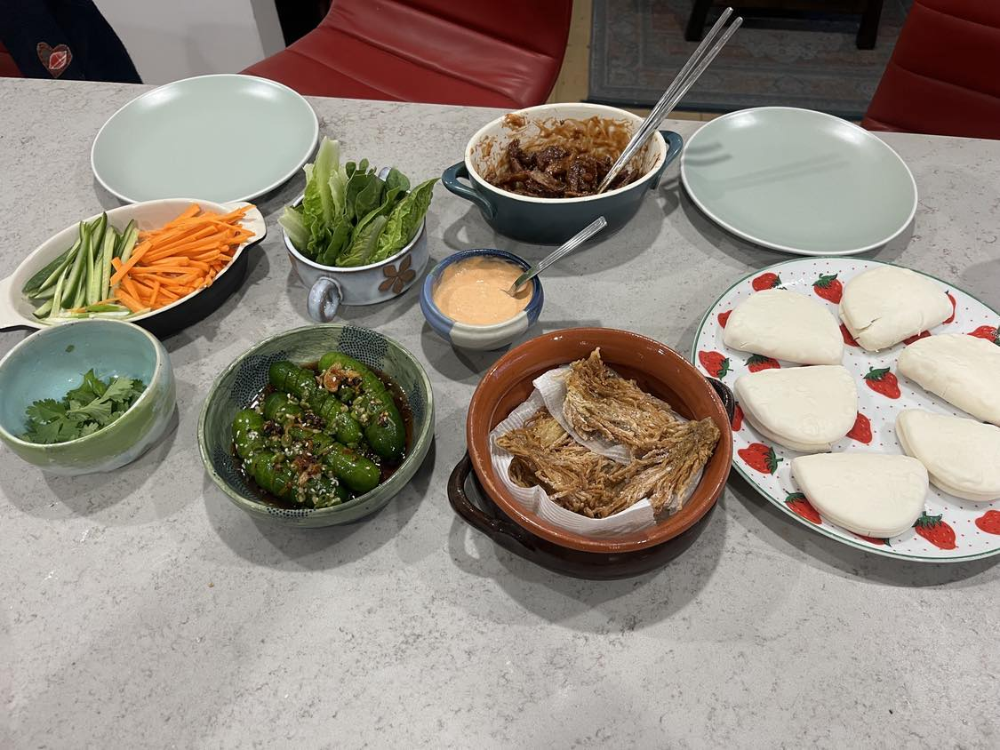

Chop the bottom off your enoki mushroom stack and pull apart into thin layers. Toss layers in cornflower and put aside.
Pull apart your king oyster mushrooms into small chunks, also toss them in cornflour. Once covered sprinkle with chinese five spice and toss again.
Chop your carrot and cucumbers into small thin slices. Chop your lettuce into small portions.
In one pan heat up a shallow amount of oil on medium heat, once hot, place strips of enoki mushrooms around the pan. Wait for the bottom sidde to become golden and crispy before flipping to the otherside. (If you wish to have them super crispy place baking paper on top of the pan and something heavy to weight it down and flatten out the mushrooms - if you choose to do this keep an eye on them!) Once both sides are golden and cripsy use tongs to take out of pan and place on a paper towel.
In another pan, heat up 2-3 tbsps of oil and once hot, toss in your king oyster mushrooms. Let them also get crispy, but toss them around until all sides are cooked. Once also golden, take out and place on a paper towel to get rid of excess oil. Once that is done, place them in a bowl and put in 3 tbsps of hoisin sauce, toss and cover the mushrooms. Add more sauce if not covered.
Follow the instructions on the bao to heat them up. Then.. get ready to serve!
As you can see in the photo we also had it with siracha mayo and a cucumber salad
